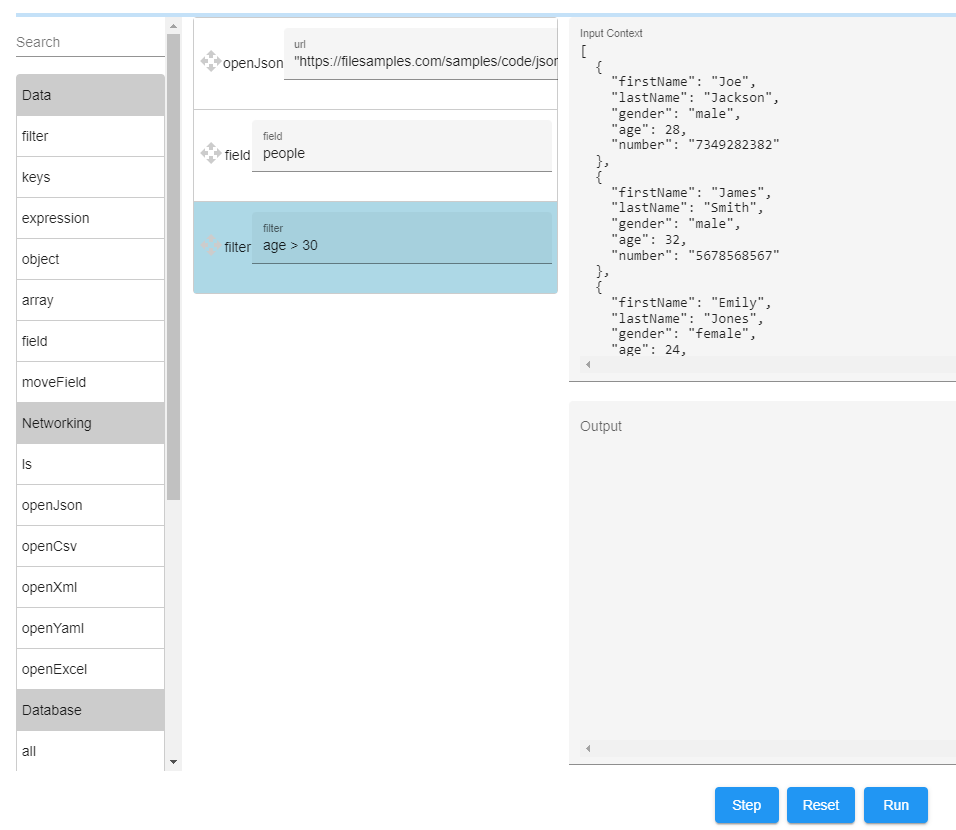

Developer Reference
This section explains all Dashjoin features in more detail and serves as a reference guide.
Universal Database Frontend
Dashjoin offers an intuitive default visualization for any kind of data. Click here for a demo video. It features the following building blocks:
Default Visualization of Tables
Unless specified otherwise using the layout editor, all table pages show two elements. First, we have a sortable and pageable table showing the database table contents. Any primary or foreign key displays a link to the corresponding record page. Secord, the page shows a form for creating a new table record. The form is configured using the table metadata the system collected from the database. In case you are a system administrator, you will see two more widgets which are explained in the section on data definition operations below.
Default Visualization of Records
The record page also has two elements. First, there is a form allowing to update and delete the record. The form is almost identical to the create form on the table page. The only exception is that it is not allowed to change primary key columns. If you would like to do this, you need to delete and re-create the record using the new key. Second, the page has a widget showing links to the table page and all related records. Note that records are related if a key in the record points to another record or vice versa.
Search Page
Dashjoin offers a powerful search capability of the underlying databases. When you enter a search term in the toolbar, the search is federated to all registered databases and the result page shows the combined result using the following columns:
- a link to the actual record matching the search
- the name of the table the record is located in
- the name of the column that matched the search
- the matching column value
In order to boost performance, Dashjoin pushes down the search queries to the underlying databases if possible. Therefore, depending on the database, the search might match keywords slight differently:
- SQL databases perform a case insensitive contains operation (i.e. "My Test String" would match the search term "test")
- Firestore performs a case sensitive starts with operation (i.e. "My Test String" would match the search term "My" but not "test")
- The default implementation behaves like SQL
Data and Database Management
In Dashjoin, it is possible to register multiple databases. This section lists the supported management operations for these databases.
Database Dashboard
The database dashboard shows the databases known to the system and allows registering new databases. The table displays some core information about each database, the connection status as well as the number of tables detected. To register a new database, first select the database type. Depending on your choice, the respective connection options appear. Once you connect, Dashjoin will collect the database metadata and immediately make the new database ready for searches, queries, and browsing. The table also provides a link to the individual database. Use this page to change connection parameters. You can also simply press update to recollect the metadata. This is useful if the underlying schema was changed by another application. Deleting the database disconnects from the database and deletes the connection information. No data is deleted in the database. The page also contains a link to the system's configuration database. Every role defined in the system must have read-only access to the configuration database. You can use this page to grant that access. In the PaaS version, you can also use the upload functionality to bulk-register tenant users.
You can also specify the roles that are allowed to read and write to the database. Note that by default, the admin role has access to all tables. Finally, you can specify search queries for a database. Please see the performance tuning section below.
If you would like to exclude certain tables from being accessible via the platform, you can add their names in the excludeTables field in the database's JSON file in the model folder as follows:
Data Definition Operations
The database page also offer a database management section. You can create a new table there. The new table will contain two columns:
- ID: a numeric primary key
- name: a generic string describing the record
The display table shows all database tables. You can delete tables there. Attention: this is a permanent operation that you have to confirm by typing "delete" into the dialog. Editing a table offers several options which are explained in the following sections. You can change the table name. This change is performed on the underlying database (e.g. a rename table operation on an SQL database).
Following the link to an individual table offers two sections in addition to the normal table display. The table metadata section simply makes the table operations (e.g. renaming a table) available from this page also. The column metadata allows creating, renaming, and deleting columns. Attention: deleting columns is a permanent operation and needs to be confirmed by typing "delete" in the dialog. Besides renaming columns, other options are available which are explained in the below.
Upload
The database management section also allows to upload data from multiple files to the current database. The following file extensions are supported:
| File | Extension | Table Name | Column Name | Suggested Data Type | Suggested Primary Key |
|---|---|---|---|---|---|
| Comma separated UFT-8 format as defined by RFC 4180 | .csv | File name before extension | First row | Guess by inspecting the data | First unique column |
| Microsoft Excel | .xlsx | Sheet name | First row | Guess by inspecting the data | First unique column |
| SQLite database | .sqlite | From database | From database | From database | First unique column |
| JSON table | .json | File name before extension | First row | Guess by inspecting the data | First unique column |
| Model folder upload to config DB | - | - | - | - | - |
The system allows you to choose multiple files and collects all tables and columns from them and displays a preview of all tables in tabs. The table above shows how the system determines table and column names as well as the primary key and column types. You cannot change the table and column names in this display. If you would like to change them, abort the process, change the source file, and repeat the upload process.
Depending on the tables to be uploaded, there are two modes. If one of the tables exists already, we enter the append / replace mode. This mode requires the structure of all tables to match the existing tables. You cannot pick column types or primary keys in this mode. You can then decide to append the data to the existing data or to replace the existing data. Attention, replacing the data will delete the data currently stored in these tables permanently. You therefore have to confirm this operation by entering "delete contents".
If none of the tables exist, we enter the create mode. The preview does allow changing the primary key and column types. The suggested values are guesses based on the data and must be double checked by the user.
Column Operations
The operations on columns can be grouped into two categories. First, changing the name and / or datatype results in the underlying database to be changed (i.e. using an alter column command on SQL databases).
Second, editing primary and foreign keys are changes on the metadata level only, since not all databases support these concepts. You can specify a column to be the primary key of the table. Note that the user interface does not support composite primary keys. A column can also be defined to be a foreign key by entering the corresponding linked primary key. Note that it is possible to define references not only within the same database but also to other databases. Setting foreign key references causes the foreign key column to display links to the related record and vice versa.
Table Label
Besides changing the table name, you can enter a label and triggers. The label defines how the system should display a record in the following scenarios:
- the browser page title when we are on a record of that table
- in the autocomplete dropdown when editing a foreign key field
- when displaying the label of a hyperlink pointing to the record
This feature is important when a table uses an artificial or non-descriptive primary key like a number or a UUID. By default, the system uses the key in the scenarios above, leading to unreadable and unintuitive displays. In this situation, the label can be changed to a template string with the template variable referencing other more descriptive record columns. For instance the table PERSON could define a label ${LAST_NAME} or even ${LAST_NAME}, ${FIRST_NAME} in order to display meaningful and user readable information rather than numbers or UUIDs.
In case of an M:N relationship, the label can be shown depending on where the link is being displayed. I.e. the page for M looks at the M:N and will only display N, and N looking at M:N will see M (this works as intuitively expected). The syntax for labels that need dereferencing is to prepend ''. To render a M:N you could use: {M} {*N} where M and N are attributes (columns) in the relationship (table).
Note that the user interface loads these template values in a lazy fashion whenever you visit a record page.
Table Triggers
Dashjoin offers create, update, and delete operations for each table. A trigger can be installed on each table that reacts before or after these operations, resulting is six trigger configurations. A trigger is an expression that is evaluated in the respective case. This following context is passed to the expression:
- command: one of create, update, or delete
- database: the database being modified
- table: the table being modified
- search: a map with the record's primary keys
- object: the record to the created or the fields to be updated
Please see the section on expressions for more details.
Table and Column Comment and Title
Dashjoin extracts the technical metadata from the databases. The editor allows you to add a comment for tables and columns in order to document the data model. The table title is used when displaying a link to the table. Likewise, column titles are used in CRUD forms and the show all records table columns.
Query Catalog and Editor
The query catalog allows you to save queries that are used by other parts of the application. Usually, these are chart and table widgets that display query results. The catalog allows you to manage queries in a central place, reuse them across the application and define important metadata about parameters and access control. Click here for a demo video.
Query Catalog Page
The query catalog page show a list of all defined queries as well as a form for entering a new query. The form has the following fields:
- ID: this is a unique identifier to reference the query (e.g. from a chart widget)
- type: queries can have type read and write indicating whether the running the query will make changes to the underlying database
- roles: defines which roles are allowed to run the query
- database: this field can only be written from the editor as shown below and defines which database is used in the query editor (note that the application can later run a query on other database with the same schema)
- arguments: queries can be parameterized using arguments (see the section below for more details)
- query: allows making manual edits to the query and offers to open the query editor dialog

Features
- Graphically build queries in an Excel-like fashion
- Add columns and join tables via point and click
- Reorder columns using drag & drop
- Apply where filters by simply adding them to the query result table
- Aggregate / group results right in the data table
- Rename columns
- Manual query edits are possible as well
- Download results as CSV
Supported Query Constructs
The editor supports a wide range of features of the query language, namely any kind of table join, aggregation and filter. It is possible to add advanced constructs such as a subquery or a call to a user defined function or stored procedure to the query by making changes in the lower text field. In this case, the query editor displays the query result but no longer allows making changes to the query via the UI controls. The reason for the controls being disabled is shown in a tool tip. You can return to the last supported query via the undo button.
Result Size
During the process of writing the query, we limit the results to 1000 rows. Use the limit text field to set an explicit query limit. Once, the limit is set, it overrides the default of 1000 result rows.
Query Parameters
The query catalog page allows defining query parameters. Each parameter consists of the following information:
- key: this is the parameter name that allows the query to reference the parameter using
${key} - type: defines the datatype of the parameter
- sample: this is the value that will be used in the query editor
Consider the following example that searches for persons with a certain name older than a given age:
This query has the string parameter p_name and the integer parameter p_age. In order to edit the query and display a result preview, we need to pluck in sample data. So we can define the samples:
This results in the following query that is used when editing the query. So in the edit dialog, the following query is used (note that the system automatically handles quotation of strings and dates):
Once the editor is closed, the samples are replaced with the template variables again. Note that this replacement is string based, so you should choose parameter names that do not "collide" with other parts of the query. Hence, we choose the prefix p_.
Graph Queries
Apart from managing traditional queries, the Dashjoin query catalog can also be used to store graph queries. There are different flavors of graph query languages. We orient ourselves at the OpenCypher language and the upcoming GQL Standard. Like queries on document and relational database, graph queries return a table where the columns represent the projection variables and each row contains variable values that match the query pattern / path.
The difference between the query types is that a graph query may return very different record types for a column / variable. Consider a graph query that returns all related records that are reachable with two hops from the starting record. Obviously, you will end up on very different records. In the northwind case, starting from an employee, these might be orders processed by the employee, the employee's boss's boss, and so on. Therefore, Dashjoin graph queries will make sure that apart from the raw data, the result also contains type information that can be used by the UI in order to interpret the values.
Graph queries can be run on a specific or on all databases. Dashjoin contains a partial OpenCypher implementation. Consider the following OpenCypher example (to learn OpenCypher, please refer to this interactive guide):
MATCH
path=(start:`dj/northwind/EMPLOYEES`)-[r1:REPORTS_TO]->(boss)-[r2:REPORTS_TO]->(finish)
RETURN
start._dj_resource, boss.LAST_NAME, finish._dj_resource, path"
This query traverses the recursive "reports to" relationship. The variables start, boss, and finish represent the graph nodes. As mentioned before, the engine adds the record metadata. i.e. which database and table / collection the record comes from. The path variable matches the entire traversal and contains all nodes and edges (relationships) that were traversed.
AQL and SPARQL Property Paths are alternative graph query languages that can be pushed down to the native database query engine if the query is run on the respective ArangoDB / RDF4J database. The Dashjoin drivers make sure that the query result has the same structure as a corresponding OpenCypher query.
Note that the graphical query editor does not yet support composing graph queries.
User Interface Layout
While Dashjoin has a rich default page layout that is suitable for many use cases, every aspects of the display can be configured using the functionality described in this section.
Pages Dashboard
The pages dashboard provides you with an overview of the available pages in the system. The first table shows the dashboards available in the system. This is a mix of system pages, which are explained in more detail in the next section, and pages created by the user via the "create a new page" form.
The page contains a link to widgets, which are introduced further down. Finally, the layouts table provides an overview of all tables and whether the default layout is used or whether the user has customized the layout using the layout editor.
System Pages and Layouts
The system comes with two system pages (Home and Info) and some layouts for databases, tables, queries, etc. These layouts contain much of the functionality described in this reference guide.
System pages can be changed using the editor introduced below, however, a delete operation does not delete them altogether, but rather resets them to the "factory" state. This ensures that you cannot accidentally damage a system permanently using the editor.
Layout Editor
To activate the layout and form editor, press the pen symbol in the toolbar. You will remain on the page, but several controls will pop up on the screen.
All widgets show a context menu with the following options:
- The top line and tooltip tell you which part of the user interface you are editing. The options are:
- Page "pagename": You are editing a dashboard page such as /page/Home
- "tablename" table: You are editing a table layout such as /table/config/dj-database
- "tablename" record: You are editing a table's record layout such as /resource/config/dj-database/dj%2Fnorthwind
- default record / table: this is the default layout (note that the default table cannot be modified and any attempted change will display an error message)
- Edit: opens a dialog to edit the widget
- You can change the widget type using the dropdown element on the top of the form
- Depending on your choice, different fields show up allowing you to configure the widget
- Please refer to the widget reference section below for a complete documentation of the various options
- Add: adds a new widget to the container or next to the widget
- Delete: removes the widget (not available on the page root)
- Cut: like delete but remembers the widget for paste operations
- Copy: Remembers the widget for paste operations
- Paste: Like add but uses the cut or copied widget
- Top: moves the widget to the top or left of the container depending on the layout
- Up: moves the widget one position up or left depending on the layout
- Down: moves the widget one position down or right depending on the layout
- Bottom: moves the widget to the bottom or right of the container depending on the layout
- The last entry is one of the following:
- Delete page: deletes a dashboard page
- Customize: if you are on a default table or record, creates a customized version of the page for this table
- Delete custom layout: if you are on a custom table or record layout, goes back to the default layout for this table
The top of the page shows a number of layout options that can be chose for the page. The options are explained in the widget reference section below. Note that the layout is responsive and will switch to a one column layout for mobile devices.
Any changes to the layout or kept in the browser memory only. You can reload the page if you would like to abandon any changes and leave the edit mode. Your changes are saved once you click the save symbol in the toolbar.
Form Editor
The button, create, and edit widgets display a nested form. Unless specified otherwise, the form elements are initialized from the table metadata. Each element display another context menu with the following options:
- Edit: opens a dialog to edit the form element giving you the following choices
- Form widget: allows you to pick the input control such as a date picker or a password field
- Title: the title of the form element (defaults to the column name)
- Description / tooltip: an optional longer description
- Example data: shows valid example input once the user clicks in the element
- Read only: disables fields that should be shown not not changed
- Format: contains pre-defined input formats for email addresses, websites, etc.
- Validation error message: the error message to show if the user enters illegal values
- Input choices: allows you to specify predefined input options
- CSS classes and CSS styles: allows you to change the default styling of the component. You can attach CSS classes used in the material design (e.g. mat-elevation-z8) or use CSS style attributes directly (e.g. width: 400px or color: green).
- Show: allows to re-add form elements that were previously hidden
- Show inline: like show, but forms a subgroup of elements (for instance address form fields can be grouped together)
- Hide: hides a form element
- Up / Left: moves the form element up or left depending on the layout
- Down / Right: moves the form element down or right depending on the layout
Custom Widgets
The system ships with a number of built-in widget such as charts or buttons. When building an application, you might find it useful to create reusable layouts. These are called custom widgets. To create a widget, navigate to the pages dashboard and follow the link to widgets.
Let's do a walkthrough of a small example. Create a widget called "tooltip-icon", navigate to the widget's page, and enter the edit mode. On the "Widget preview" element, open the second context menu with the tooltip Widget "tooltip-icon" in order to define the widget. In the editor, select the widget "icon", remove the element text and enter "reusable" in the tooltip, and save the layout. You now created a custom widget called tooltip-icon that carries a reusable configuration.
Next, you need to do a browser reload, since the editor caches custom widgets and needs to pick up the new widget. Navigate to the home page and add two widgets. Edit both widgets, select "tooltip-icon" as the widget type, and use icon home and search respectively. Note that the different icons show up, but both show the tooltip "reusable". The layout editor also shows two context menus. The left menu with tooltip "Page Home" edits how the the tooltip-icon widget is embedded. The right menu with tooltip "Widget tooltip-icon" edits the widget itself. If you open the editor there and select a different tooltip, the next value is applied to both home and search.
Obviously this example is very simplistic, however it demonstrates how you can create reusable sub layouts. Note that the custom widget can also be a container with nested widgets. You can test this by changing the tooltip-icon widget to "expansion" for instance.
dj-toolbar
The system ship with two predefined widgets. The widget dj-toolbar is included by default by the page widget. You can edit the toolbar by visiting the page /resource/config/widget/dj-toolbar. Once you enter the edit mode, you can make changes to the toolbar. A typical use case would be to edit the roles that are required for an icon to appear. You can also add an icon pointing to your custom dashboard page. Since the dj-toolbar is shipped with the system, you can revert back to the original version by clicking delete on this page. Do not forget to reload the browser since the widgets are cached.
Widget Reference
The following sections describe the platform widgets and which configuration options are available for them. Note that all widgets have the title option:
- title: when the widget is a direct child of the page container, the widget is placed in a card with this title
Widgets can be grouped into the following three categories.
Container Widgets
Container widgets can contain other widgets. All container widgets have features that control under which conditions content is shown or hidden. Please note that these features are enforced on the client and thus can be manipulated by malicious users. Specifically, do not rely on these features to implement security and data privacy. You can safely restrict access on the server side by applying access control to functions, databases, tables, and queries.
card
Layout card with a title and nested widgets:
- text: card title
- roles: show container only if user is in one of these roles
- layout: chooses a horizontal (default) or vertical layout for the child widgets
- if: show the widget if the expression is true
- foreach: show the single child for each result, using the result as the context
- class: CSS classes to apply to the container
- style: CSS styles to apply to the container
container
Container with a plain layout
- roles: show container only if user is in one of these roles
- layout: chooses a horizontal (default) or vertical layout for the child widgets
- if: show the widget if the expression is true
- foreach: show the single child for each result, using the result as the context
- class: CSS classes to apply to the container
- style: CSS styles to apply to the container
- redrawInterval: redraw interval (seconds). Periodically refreshes the container and all contained content.
expansion
Collapsible container with nested widgets
- text: card title
- roles: show container only if user is in one of these roles
- layout: chooses a horizontal (default) or vertical layout for the child widgets
- if: show the widget if the expression is true
- foreach: show the single child for each result, using the result as the context
- class: CSS classes to apply to the container
- style: CSS styles to apply to the container
grid
Container with a grid layout
- roles: show container only if user is in one of these roles
- if: show the widget if the expression is true
- foreach: show the single child for each result, using the result as the context
Regular Widgets
All non-container widgets are called regular widgets.
button
Runs / evaluates an expression when clicked.
- text: text shown for the run button (default is "Run")
- print: evaluate expression and print result at the bottom of the screen when clicked
- navigate: evaluate expression and navigate to result URL when clicked
- properties: optional properties the user needs to enter before clicking (please refer to the FAQ for information on how to customize the input form)
- clearCache: if checked, clears the browser cache (use this option if the expression performs side effects on the database)
- deleteConfirmation: optional confirmation message before performing the action
chart
Chart for visualizing query results.
- database: database to run the query on
- query: query to run; the query is expected to project the following column structure:
- label followed by a value column: in this case, a chart with a single series is shown. The first column is used as the series axis label and the second column is used as the value range
- two label columns followed by a value column: in this case, a chart with a multiple series is shown. The first column identifies which series the row belongs to. From there, the process described above is repeated
- arguments: optional expression resulting in query arguments
- chart: chart type
- style: key value pairs that construct chart option object - for instance, scales.y.min = 0 makes sure the y-axis starts at 0. By default, the chart limits the number of data points to 1000. This can be overridden by setting "limit" to the desired value
- graph: specifies whether the query is a graph query
- expression: allows configuring the widget via JSONata. If omitted, the widget uses $query(database, query, arguments)
Examples: * chart-stacked-bar * chart-timeline
create
Creates new database records:
- text: text shown for the create button (default is "Create")
- database: optional database to create the record in (defaults to the database of the table you are currently displaying)
- table: optional table to create the record in (defaults to the table you are currently displaying)
display
Displays the result of an expression:
- display: expression to display
- icons: if display evaluates to an object, icons maps the object keys to material icons
Depending on the result of the evaluation, one of the following cases applies:
- a single result value is displayed as is
- an object is displayed as a key-value list
- if the object has exactly the keys "database", "table", and "pk1", the result is displayed as a link to the record identified by these values
- if the object has exactly the keys "database", "table", "pk1", and "page", the result is displayed as a link to the record identified by these values and uses the specified page to visualize the record
- an array of objects is displayed as a table
- if the object has exactly the key "img" (with optional width and height), the result is displayed as an HTML image with the value of the img field being used as the image src attribute
- if the object has exactly the key "href" or the keys "href" and "label", the object is displayed as a hyperlink
Example:
"display": {
"item one": "this item's value",
"item two": "another value",
"item three": "last value",
},
"icons": {
"item one": "traffic",
"item two": "turn_left"
}

Item one will be displayed with the "traffic" icon, item two with the "turn_left" icon. When no item is specified for a key, the default item is used. In the above example, "item three" will display the default icon.
When icons is "*": "icon", all icons will be mapped to that same specified icon.
edit
allows editing a database record. Note that the form layout can be customized in the layout editor. Please also refer to the FAQ for information on how to further customize the input form.
- deleteConfirmation: optional confirmation message before deleting the record
editRelated
Allows editing related records of a database record:
- text: text shown for the create button (default is "Create")
- prop: foreign key column on the related table
- columns: columnstodisplayintheeditRelatedtabledisplay
- deleteConfirmation: optional confirmation message before deleting a related record
html
Displays custom HTML
- html: HTML to display, can include Embedded JavaScript templating
- css: CSS code to apply to the HTML
- hideframe: Remove mat-card class from parent tag
- context: an expression that allows setting additional context variables that can be referenced via
${context.VARIABLE}or if Embedded JavaScript templating is used via<%=context.VARIABLE}%>
Note that by default, the CSS styles are only applied to the component. This feature can be turned off by adding the following comment to the HTML:
With this setting, Dashjoin does not apply any sort of view encapsulation meaning that any styles specified for the component are actually globally applied and can affect any HTML element present within the application. This mode is essentially the same as including the styles into the HTML itself.
icon
Displays a hyperlink icon with tooltip
- href: optional link target
- icon: icon to display (see https://material.io/resources/icons/?style=baseline)
- tooltip: icon tooltip
links
Displays links to related records
map
Displays a map for a given location.
- display: expression that results in a location - this value is resolved using the q query parameter of the Open Streetmap API service
markdown
Displays markdown
- markdown: markdown to display
- context: an expression that allows setting additional context variables that can be referenced via
${context.VARIABLE}
Note that the HTML generated by the markdown engine is sanitized in order to avoid XSS vulnerabilities. Specifically, if you are using HTML tags, style attributes are filtered. A common task is to add margins to images. You can achieve this by adding a class attribute to the element and setting the value to a predefined material class like mat-elevation-z8. Alternatively, the markdown widget defines the styles margin1 to margin5 which set the element margin to 1em to 5em.
notebook
This widget is the JSONata equivalent of a Jupyter notebook. It allows composing and running several expressions. The result of every expression is stored in the browser session. You can also assign variables and use them in other expressions.
The widget offers a save function at the bottom. This saves the entire page and the expressions contained within. Please note that the notebook widget should only be used as the sole widget on the page, since saving the notebook will delete other widgets you might place on the page.
table
Displays query results as a table
- database: database to run the query on
- query: query to run
- arguments: optional expression resulting in query arguments
- graph: specifies whether the query is a graph query
- expression: allows configuring the widget data via JSONata which must evaluate to an array of objects. Note that the table is able to display links, images, and lists thereof. Please refer to the display widget for information on how the JSON data must be structured. If omitted, the widget uses $query(database, query, arguments)
Database and table can be omitted on table pages. In this case, the widget displays the equivalent of a select all from the respective table.
text
Displays a simple text
- href: optional link target
- text: text to display
- icon: optional icon to display in front of the text
tree
Displays a tree based on a recursive query
- database: database to run the query on
- query: query that projects a single column with the keys of the current node's children
- arguments: expression that passes the current node's primary key as a query argument
- expression: allows configuring the widget via JSONata. If omitted, the widget uses $query(database, query, arguments)
variable
Displays a form that allows setting session variables. If a variable "x" is defined and set, it can be referenced in other widgets using "variable.x". A variable can be set via a URL query parameter. Appending ?a=1&b=test to the URL will set variable.a to "1" and variable.b to "test". Note that only string variables can be set this way, so you might have to use $number(variable.a) when using the variable.
- properties: an object where the fields are variable names and the values the respective types (please refer to the FAQ for information on how to customize the input form)
Special Widgets
The platform defines a couple of special widgets that are not offered in the layout editor.
page
The page container is a special container which usually is placed at the page's layout root. Compared to a regular container, it has the following additional layout features:
- it always shows the dj-toolbar widget
- all of its children are displayed in cards with the widget's title field used as the card title (the title is ignored if the widget is placed elsewhere)
The page defines a single option called pageLayout. It has the following value range that defines how the page's children are arranged:
- 1 column: single column layout
- 2 column: a two column layout
- 3 column: a three column layout
- T 2 column: the first widget is placed at the top with full width, followed by the other children in a two column layout
- T 3 column: the first widget is placed at the top with full width, followed by the other children in a three column layout
- horizontal: all children are arranged left to right, possibly wrapping into the next row
- grid: all children are arranged on a table grid
toolbar
(container with child widgets in a toolbar layout)| show container only if user is in one of these roles
activity-status
Progress bar that indicates whether the UI is loading data.
layout-edit-switch
Toggles layout edit mode and allows saving layouts.
queryeditor
The query editor widget:
- database: optional database preselection
- query: optional query preselection
search
Text box for entering global search terms
search-result
Table display for search results.
spacer
Spacer between left and right aligned container items.
upload
Button that uploads data to a database.
Functions
Apart from changing data in databases, Dashjoin can call functions on the backend. Functions come in two flavors: First, there are functions that simply extend the functionality you can use in expressions. An example would be a simple toUpperCase function that transforms a string to upper case. These functions are introduced further later in the section on expressions. Second, there are configurable functions. These work very much like their counterpart, however, they require additional configuration parameters. An example would be a function to send an email. The actual function call requires you to specify subject, sender, receiver, and the body. But you would not want to have to repeat the email server address and credentials every time. So you can register an instance of email service with specific parameters and call it email-service-1. This section describes the latter configurable functions.
Click here for a demo video.
Function Page
The function page works a lot like the database page. It shows a table of the functions that have been created on the system. To create a new function, you first need to select the function type. Depending on your choice, you can enter the respective configuration parameters. The function type specifies whether the function is read only or whether it has side effects like sending email or writing data. Finally, the roles specify which user role is allowed to run the function.
Function Reference
The system supports the following functions. Each section lists the function configuration parameters that are constant any time this function is called as well as the parameters that are specific for each invocation.
RestJson
Calls an external REST service.
Configuration
- url: the URL of the REST service to call (the URL may contain template variables
${var}which are replaced with the respective argument field) - username: optional HTTP basic authentication user name
- password: optional HTTP basic authentication password
Invocation parameter
- object: If object is specified, POSTs the object serialized as JSON. If object is null, GETs the result
Return value
- JSON result returned by the service
Sends an email.
Configuration
- username: username to log into the email service
- password: password to log into the email service
- properties: SMTP server configuration
Invocation parameter
- from: email sender in RFC822 syntax
- to: email recipient in RFC822 syntax
- subject: email subject line
- text: email text
Return value
- none
Invoke
Allows saving an expression on the server. When run, we evaluate / apply the expression with the data context passed as an argument.
Configuration
- expression: The expression to save and run when invoked
Invocation parameter
- object: the expression evaluation context (see next chapter)
Return value
- expression result
Mapping Functions
Mapping functions are specialized functions that have no invocation parameters and outputs. They are used to write data into a database and can be run in a scheduled fashion. All mapping functions perform the following three steps.
Click here for a demo video.
Gathering Data
It is up to the mapping function how this task is achieved. The only requirement is that the function gathers a set of tables.
The Mapping Step
This step is common to all mapping functions and is supported by a specialized mapping editor. The mapping step transforms the gathered set of tables into another set of tables. The mapping step supports the following operations:
- remove table: a table from the initial step can be removed / ignored
- remove column: drops a column from a table
- rename table: a table from the initial step can be renamed
- rename column: renames a column in a table
- add table: a table can be added by providing the name of an initial table
- add column: a column can be added to a table
- modify column: sets the column to a new expression (the default simply copies the original value 1:1 using
$.columnname; please see the next section for more details on expressions) - extract table: if an input table contains a column with array values, extracts the union of these arrays into a new table
The Save Step
The save step writes the output of the mapping step into the database. The following modes are supported:
Ignore
Simply add the data (update in case the record already is in the DB, insert if not). We follow the "normal" update semantics meaning that key=null actually deletes the value in the DB, whereas missing keys remain untouched.
Database
| id | _dj_source | name |
|---|---|---|
| 1 | Joe | |
| 2 | Mike |
Extracted Data from ETL "ignore"
| id | name |
|---|---|
| 1 | John |
| 3 | Nate |
Result
| id | _dj_source | name |
|---|---|---|
| 1 | John | |
| 2 | Mike | |
| 3 | ignore | Nate |
Row 1 is updated. Row 2 remains unchanged. Row 3 is added and thus gets marked as having source e.
Extracted Data from ETL "ignore"
| id | name |
|---|---|
| 1 | John |
| 4 | Jane |
Result
| id | _dj_source | name |
|---|---|---|
| 1 | John | |
| 2 | Mike | |
| 3 | ignore | Nate |
| 4 | ignore | Jane |
Row 4 gets added. Row 3 remains even though it is no longer in the extraction result.
Refresh
All records from the target tables that have the _dj_source column matching the ID of this function are updated. If a key is no longer present in the new data, the record is deleted.
Database
| id | _dj_source | name |
|---|---|---|
| 1 | Joe | |
| 2 | Mike |
Extracted Data from ETL "refresh"
| id | name |
|---|---|
| 1 | John |
| 3 | Nate |
Result
| id | _dj_source | name |
|---|---|---|
| 1 | John | |
| 2 | Mike | |
| 3 | refresh | Nate |
The first run of "refresh" has the same effect as "ignore".
Extracted Data from ETL "refresh"
| id | name |
|---|---|
| 1 | John |
| 4 | Jane |
Result
| id | _dj_source | name |
|---|---|---|
| 1 | John | |
| 2 | Mike | |
| 4 | refresh | Jane |
The third row, which was added by "refresh" previously, is deleted and row 4 is added.
Delete All
All records from the target tables are deleted, if createSchema is true, the tables are also dropped in case columns are no longer needed or previously had another datatype.
Database
| id | _dj_source | name | age |
|---|---|---|---|
| 1 | Joe | 33 | |
| 2 | Mike | 44 |
Extracted Data from ETL "delete-all"
| id | name |
|---|---|
| 1 | John |
| 3 | Nate |
Result
| id | _dj_source | name |
|---|---|---|
| 1 | delete-all | John |
| 3 | delete-all | Nate |
The table content is deleted. If create schema is specified, the age column is also deleted. Rows 1 and 3 get added with the respective source.
Extracted Data from ETL "delete-all"
| id | name |
|---|---|
| 1 | John |
| 4 | Jane |
Result
| id | _dj_source | name |
|---|---|---|
| 1 | delete-all | John |
| 4 | delete-all | Jane |
The table content is deleted and rows 1 and 4 are added.
Mapping Function Reference
ETL
The ETL function uses an expression as input into the mapping process. The expression result can be a map of table names to an array of rows (JSON objects). If the expression result has a simpler structure (for instance only a single table), the ETL function wraps this in a default table called "table".
If you want to load a large amount of data, you can use the "foreach" expression to specify
how to split the loading process into smaller parts. Assume you have a directory with
thousands of files to load. The foreach expression can list the files using $ls("url").
The expression then specifies how each file is handled. Its $ context is set to
each individual URL and the expression and subsequent ETL are called for each URL individually.
Note that you can also stream large JSON, XML, or CSV files via the streamJson, streamXml, and streamCsv functions. In this case, these functions split a large file into smaller chunks which are then passed to the mapping expression.
Consider the following example expressions:
$openExcel("https://download.microsoft.com/download/1/4/E/14EDED28-6C58-4055-A65C-23B4DA81C4DE/Financial%20Sample.xlsx")
Note that you have the full power of JSONata available for this operation. Consider the following example. We'd like to incrementally load files that are placed in an upload folder. Only files that have been added since the last run should be considered:
The ls function returns an array containing objects with the modified file timestamp as well as the url of the file. The jobStatus function returns information about the last job run. Therefore, we can filter the files to only include the ones that have a modified timestamp after the job ran last.
The setting "ETL worker threads" can be used to achieve parallel writes to the database. This setting is only applicable if a foreach expression is specified. In this case, the setting "ignore ETL errors and continue process" specifies that any error that occurs when streaming a large file (e.g. a formatting error towards the end of the file) or when workers map and write the contents to the database (e.g. due a malformatted date string) are ignored and do not stop the other workers.
Receive
The receive function allows handling cases, where the platform is being sent data that is to be processed and saved into a database. This use case is common in IoT scenarios where a stream of sensor data is passed via the REST API. The Receive function can be configured like the ETL function and allows mapping the data into the desired structure. The create schema parameter works like in the ETL case and optionally adapts the underlying schema to accommodate new fields and tables. Receive defines a parameter called sample where a stream data sample can be added. This sample data is used to edit the mapping. Note that Receive always appends the new data like the Ignore mode in the ETL case. The difference is that there is no expression that fetches data. Instead, the data is passed via the API call.
Expressions
Expressions are small programs that can be used to:
- configure widgets on a page (the most common case)
- save an expression with an Invoke function
- attach triggers to database tables
This section describes the expression language's syntax and semantics are well as the built-in Dashjoin keywords.
JSONata
Expressions use the well established JSON query and transformation language JSONata. The JSONata exerciser shows three sections:
- the context data (this usually is the record you are browsing on the user interface)
- the expression
- the expression result
The JSONata documentation explains the language, the operators, as well as which built-ins are available.
Expression Editor
Expressions are used in various places throughout the platform. The next sections describe the different usage scenarios in more detail. Whenever an expression is to be edited on a form, Dashjoin allows you to do this via the expression editor component which is explained in this section.
The expression editor is a simple text field that shows context sensitive help and a result preview once you start typing.
As an example, you can navigate to the info page, enter the page edit mode and edit the user display widget. The widget displays the result of the following expression which projects the user field from the page context (the composition of the context is explained in the next section):
If you delete the closing curly bracket, the system will tell you that the expression is invalid: line 1:13: missing '}'. Now enter the following expression that calls the built-in read:
The system will tell you about missing parameters: Arguments required: $read(database, table, pk1). Now change the expression to:
Assuming you have the demo application installed, this will show the first 10 lines of JSON that contain the respective record in the employees table of the northwind database. Finally, setting the expression to
displays the entire page context.
Apart from the inline editor, you also have the ability to compose and debug JSONata expressions by opening the drag and drop editor with the edit icon:

- Drag and drop fuctions and operators onto the canvas from the left palette
- Edit the parameters and re-arrange the steps using drag and drop
- You can run the expression step by step; the data context is shown on the left
The screenshot shows the following expression just before the final filter is applied.
JSONata in Widgets
When expressions are used in widgets, the context is the following JSON object:
{
database: name of the the database we are on
search: the search term (only set if we are on the search result page)
table: name of the table we are on
pk1: value of the first primary key column
pk2: value of the second primary key column
pk3: value of the third primary key column
pk4: value of the forth primary key column
user: the name of the user logged in
email: the email of the user logged in (PaaS only)
roles: the array of roles the user is in
form: value entered in the custom form of the button widget
}
The expression is provided as the widget parameter via the layout editor.
The result is used depending on the widget and the expression field. The if parameter, for instance, expects a Boolean value in order to determine whether to show the widget or not. The display widget simply displays the expression result. Consult the widget reference for information about your use case.
JSONata in Invoke Functions
The Invoke function allows you to wrap an expression as a function.
The context is passed as the function parameter.
The expression is a configuration parameter of the function.
The result is returned to the function caller.
JSONata in Triggers
Triggers allow evaluating expression before or after a write operation on a table.
In this case, the context is defined as follows:
{
command: create, update or delete
database: CRUD on this DB
table: CRUD on this table
search: primary keys of the record, set for delete and update
object: object to create or fields to update, set for update and create
}
The expression is defined with the table.
The result is ignored, unless the trigger function extends the AbstractDatabaseTrigger Java interface. In this case, we expect a Boolean value that aborts the write operation in case the value false is returned.
Dashjoin Expression Reference
In addition to the default JSONata builtin functions (see Function Library), the following Dashjoin functions are added (some internal functions are omitted - you can refer to the platform's info page for a full list):
| Function | Syntax | Returns |
|---|---|---|
| create | $create(database, table, pk1) | ID of the new record |
| all | $all(database, table) | array of all table records |
| all | $all(database, table, offset, limit, sort, descending, filter) | array of all table records whose columns match the filter key's values |
| read | $read(database, table, pk1) | The record |
| traverse | $traverse(database, table, pk1, fk) | Record(s) related to the current record via the property fk. If fk is a simple column name, fk is an outgoing foreign key and the single related record is returned. If fk is a full property ID like dj/database/table/column, then a list of records from that table that have a fk pointing to the current record are returned |
| update | $update(database, table, pk1, object) | |
| delete | $delete(database, table, pk1) | |
| call | $call(function, argument) | Dashjoin function result |
| query | $query(database, queryId, arguments) | Query result table |
| queryGraph | $queryGraph(database, queryId, arguments) | Graph query result, specifying the database as * runs an OpenCypher query over all DBs |
| adHocQuery | $adHocQuery(database, query, limit?) | Runs as ad hoc select / read query |
| incoming | $incoming(database, table, pk1) | [{id: ID of the record where the link originates, pk: ID of the pk column, fk: ID of the fk column}, ...] |
| echo | $echo(any) | Prints the parameter to the log |
| index | $index() | Generates a unique row index ID |
| djVersion | $djVersion() | Returns the platform version information |
| djRoles | $djRoles() | Returns the roles of the current user |
| djUser | $djUser() | Returns the current user's name |
| isRecursiveTrigger | $isRecursiveTrigger() | true if the current expression is called from a trigger expression (trigger calls trigger) |
| jobStatus | $jobStatus() | if evaluated within a function, start and stop timestamps (millis since 1970) and job status |
| moveField | $moveField(object, 'from', 'to') | Moves the object's from key into the to key, where to must be an object or array |
| ls | $ls(url, preview-limit) | Lists all URLs found at url (the URL can also contain filter wildcards like *.txt). preview limit determines how many results are returned in preview mode (defaults to 10) |
| streamJson | $streamJson(url, jsonPointer) | Parses JSON at the url and splits it at the json pointer location |
| streamXml | $streamXml(url, jsonPointer) | Parses XML at the url, converts it to JSON, and splits it at the json pointer location |
| streamCsv | $streamCsv(url, options) | Parses CSV at the url and splits it at the record boundaries. By default, CSV is parsed as RFC4180. Options can be provided, where the key is a "with" method like withDelimiter and the value is the argument. Please see the documentation for more details. |
| streamDb | $streamDb(database, table) | Streams records from the database table specified |
| openJson | $openJson(url) | Parses JSON at the url |
| openCsv | $openCsv(url, options) | Parses CSV at the url and converts it to JSON. By default, CSV is parsed as RFC4180. Options can be provided, where the key is a "with" method like withDelimiter and the value is the argument. Please see the documentation for more details. |
| openXml | $openXml(url, arrays) | Parses XML at the url and converts it to JSON. In this process, openXml guesses which XML tags need to be converted to arrays and which become simple fields. This process might produce inconsistent results when the XML tree contains lists with single entries. To avoid this, you can optionally pass a list of tag names that must be arrays. |
| openYaml | $openYaml(url) | Parses YAML at the url and converts it to JSON |
| openExcel | $openExcel(url) | Parses Excel at the url and converts it to JSON |
| openText | $openText(url, encoding) | Parses the url and converts it to a string |
| parseJson | $parseJson(json) | Parses JSON (see openJson) |
| parseCsv | $parseCsv(css, options) | Parses CSV and converts it to JSON (see openCsv) |
| parseXml | $parseXml(xml, arrays) | Parses XML at converts it to JSON (see openXml) |
| parseYaml | $parseYaml(yaml) | Parses YAML and converts it to JSON (see openYaml) |
| parseExcel | $parseExcel(base64) | Parses Excel and converts it to JSON (see openExcel). The parameter must be a base64 encoded data URL (RFC 2397) |
| uuid | $uuid() | Generates a random UUID |
| exec | $exec(executable, arguments, [json, xml, csv, yaml]) | runs the script or executable located in the app's bin folder and optionally parses the output to JSON, XML, or CSV |
| erDiagram | $erDiagram(database?) | Generate an ER diagram for https://dbdiagram.io/d |
| stats | $stats(database, table, limit?) | Generate statistics for a database table (type, min, max, count, distinct values, etc.) |
| gitStatus | $gitStatus() | Run git status |
| gitPull | $gitPull() | Run git pull |
| gitRestore | $gitRestore(path) | Revert a change |
| gitCommit | $gitCommit(message, [paths]) | Run git commit and push |
| saveTable | $saveTable(Ignore | Refresh |
| reconcileEntity | $reconcileEntity(entity, entity-language?, limit?) | Uses the wikidata query service to reconcile a string to a wikidata id. The entity is a simple string. The entity language is the language the entity is expressed in (defaults to en). The limit (default 1) determines the number of results returned (see chapter AI & ML) |
| classifyEntities | $classifyEntities([entities], entity-language?, limit?, subclass-depth?) | Reconciles entities and finds common classifications that all entities are an instance of. The parameters are similar to the reconcileEntity function. The subclass depth (default 1) describes the number of superclasses that are included in the results (see chapter AI & ML) |
| synonym | $synonym({algorithm: threshold}, [terms], [variants], ignoreCase?, ignoreEquality?) | Allows generating synonym table to match keys despite small typos etc. (see chapter AI & ML) |
Access Control
Several other sections already touched on access control and how certain functionality is only allowed for certain roles. This section explains how roles are defined and how users are assigned to be in a role.
Info Page
The info page shows various system data. At the top of the page you find the username of the current user as well as the roles he or she is in. From there you also find a link to the roles dashboard and, on the PaaS offering, a link to the tenant users.
Roles Dashboard
The roles dashboard allows the administrator to define system roles along with the homepage for users in this role. You cannot pick arbitrary role names here. Unless you are using the Dashjoin Cloud, the names depend on the roles defined in the identity management system (IDM) you are using. If you change your container configuration to use windows authentication, your role names will be "Users", "Power Users", "Guests", etc. If you are using the Dashjoin Cloud, you can choose arbitrary role names and assign users to these roles using the tenant user dashboard.
Assigning Roles
Roles can be assigned to the following elements:
- Container widgets and the top level page widget: In the layout editor, you can specify that a container or page is only shown if the user is in a given role. Note that this feature does not replace the backend checks listed below. Containers are simply hidden. The page shows an error message on the bottom.
- Toolbar elements: You can customize which elements are visible on the toolbar by editing the toolbar widget at /#/resource/config/widget/dj-toolbar. Roles can be assigned to icons, the sidenav toggle, the page edit button, and the search box
- Functions: Functions can be restricted to be executable only to users in certain roles
- Queries: Queries can be restricted to be runnable only to users in certain roles
- Tables
- readRoles: Users in one of these roles get to read rows of this table
- writeRoles: Users in one of these roles get to update, delete, and create rows of this table
- Databases: defines a database wide default for any table that does not define read or write roles
Row-Level Security
Row-Level Security allows restricting access to certain table rows depending on the value of a column. A common use case are portals where different tenants should only see their data. Consider the following example where the owner column is the name of the user the item belongs to:
| id | name | owner |
|---|---|---|
| 1 | item 1 | joe |
| 2 | item 2 | mike |
Using the table metadata editor, we can define "owner" to be the "tenantColumn", i.e. the column that defines the row-level security. If user mike logs in, he will only see item 2 on the item table.
Row-level security can also be defined users being in a certain role. Consider this customer table:
| id | name | region |
|---|---|---|
| 1 | customer 1 | south |
| 2 | customer 2 | north |
Now, let's assume role "sales-south" should get access to rows where region is "south". This can be accomplished by defining region to be the tenantColumn in addition to defining the following role mapping:
- sales-south: south
- sales-north: north
Row-level security is applied to the entire dashjoin platform automatically, except for queries. If a query involves a table that has row-level security defined, the query must have a parameter that is set accordingly. We show two examples for the tables defined above. A query on the item table might look as follows:
- query: select * from item where owner = ${tenant}
- query parameter expression: { "tenant": user }
The role mappings on the customer are translated to a JSONata expression:
- query: select * from customer where region = ${tenant}
- query parameter expression: { "tenant": "sales-south" in roles ? "south" : ("sales-north" in roles ? "north") }
Adding static assets to the app
Static assets like images, logos, movies, and other files required by your application can be placed in the /assetsfolder.
The assets are accessible in the running application as http(s)://<app url>/assets
By definition, access to static assets does not require login, so they are always readable / publically accessible. Do not place any confidential data in the assets folder.
When working with version control tools (i.e. git), assets can be maintained along with all other app resources under revision control.